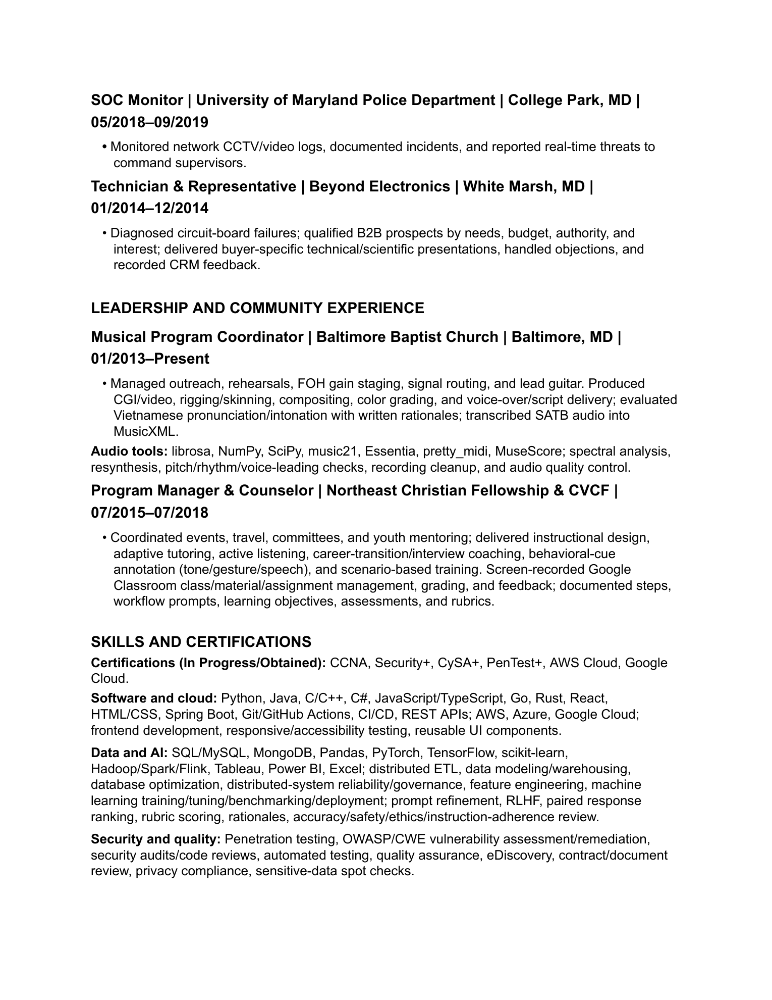
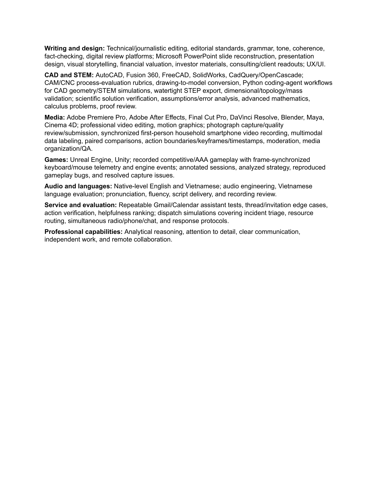

Résumé
Resume (PDF download)


Read as text
DANIEL NGUYEN
Arnold, MD 21012 | 443-810-1873 | dhp.nguyen300@gmail.com
| Portfolio: https://ishmael366.github.io/DanPortfolio.github.io/
| Highlighted Project: https://therubyquartz.github.io/labyrinth/
PROFESSIONAL SUMMARY
Multidisciplinary developer with experience spanning technical development, research,
creative production, and community leadership. Focused on advancing influence through
collaborative platforms, training through simulation and evaluation, and exploration through
connected knowledge and immersive libaries. Altogether to connect people, develop capabilities,
and turn discovery into action that advances conservation and improves life for communities and the
natural world.
EDUCATION
Penn State University – World Campus | Current Enrollment
Bachelor of Science in Information Science & Technology | Bachelor of Arts in Business
INDEPENDENT DEVELOPMENT & INTERNSHIP EXPERIENCE
Labyrinth | Internship with Dr. Ehsan Sabaghian
• Built Labyrinth, a conservation platform, in React/TypeScript, consisting of exploratory archives,
3D simulators, and social networks, each with various interactive tools and live data.
Software Engineering and AI Evaluation Subprojects within Labyrinth
• Integrated assets, wildlife, and environments, including their movements, graphics, social
significance, infrastructure, health, combat, models, artworks, environment, survival skills,
videos, & audio
• Maintained open-source repositories and GitHub workflows; reviewed AI patches,
optimized secure APIs, and applied competitive programming to reproducible RL/MCP
benchmarks with reference solutions and deterministic tests.
• Built biological/medical, financial, and legal/political data benchmarks with defined outputs
and 35+ criterion rubrics for error detection, reconciliation, and PII protection.
• Created and validated financial, statistical, clinical, and operational chart questions using
verified calculations, source triangulation, and difficulty testing. Authored technical
documentation, research reports, and source-verified editorial content.
PROFESSIONAL EXPERIENCE
Specialist | Apple Inc. | Annapolis, MD | 10/2019–2023
• Delivered iOS/macOS diagnostics, provider calls, reservations, appointments, confirmations,
queue navigation, escalation, negotiation, CAPTCHA workflows, and confidential call records.
SOC Monitor | University of Maryland Police Department | College Park, MD |
05/2018–09/2019
• Monitored network CCTV/video logs, documented incidents, and reported real-time threats to
command supervisors.
Technician & Representative | Beyond Electronics | White Marsh, MD |
01/2014–12/2014
• Diagnosed circuit-board failures; qualified B2B prospects by needs, budget, authority, and
interest; delivered buyer-specific technical/scientific presentations, handled objections, and
recorded CRM feedback.
LEADERSHIP AND COMMUNITY EXPERIENCE
Musical Program Coordinator | Baltimore Baptist Church | Baltimore, MD |
01/2013–Present
• Managed outreach, rehearsals, FOH gain staging, signal routing, and lead guitar. Produced
CGI/video, rigging/skinning, compositing, color grading, and voice-over/script delivery; evaluated
Vietnamese pronunciation/intonation with written rationales; transcribed SATB audio into
MusicXML.
Audio tools: librosa, NumPy, SciPy, music21, Essentia, pretty_midi, MuseScore; spectral analysis,
resynthesis, pitch/rhythm/voice-leading checks, recording cleanup, and audio quality control.
Program Manager & Counselor | Northeast Christian Fellowship & CVCF |
07/2015–07/2018
• Coordinated events, travel, committees, and youth mentoring; delivered instructional design,
adaptive tutoring, active listening, career-transition/interview coaching, behavioral-cue
annotation (tone/gesture/speech), and scenario-based training. Screen-recorded Google
Classroom class/material/assignment management, grading, and feedback; documented steps,
workflow prompts, learning objectives, assessments, and rubrics.
SKILLS AND CERTIFICATIONS
Certifications (In Progress/Obtained): CCNA, Security+, CySA+, PenTest+, AWS Cloud, Google
Cloud.
Software and cloud: Python, Java, C/C++, C#, JavaScript/TypeScript, Go, Rust, React,
HTML/CSS, Spring Boot, Git/GitHub Actions, CI/CD, REST APIs; AWS, Azure, Google Cloud;
frontend development, responsive/accessibility testing, reusable UI components.
Data and AI: SQL/MySQL, MongoDB, Pandas, PyTorch, TensorFlow, scikit-learn,
Hadoop/Spark/Flink, Tableau, Power BI, Excel; distributed ETL, data modeling/warehousing,
database optimization, distributed-system reliability/governance, feature engineering, machine
learning training/tuning/benchmarking/deployment; prompt refinement, RLHF, paired response
ranking, rubric scoring, rationales, accuracy/safety/ethics/instruction-adherence review.
Security and quality: Penetration testing, OWASP/CWE vulnerability assessment/remediation,
security audits/code reviews, automated testing, quality assurance, eDiscovery, contract/document
review, privacy compliance, sensitive-data spot checks.
Writing and design: Technical/journalistic editing, editorial standards, grammar, tone, coherence,
fact-checking, digital review platforms; Microsoft PowerPoint slide reconstruction, presentation
design, visual storytelling, financial valuation, investor materials, consulting/client readouts; UX/UI.
CAD and STEM: AutoCAD, Fusion 360, FreeCAD, SolidWorks, CadQuery/OpenCascade;
CAM/CNC process-evaluation rubrics, drawing-to-model conversion, Python coding-agent workflows
for CAD geometry/STEM simulations, watertight STEP export, dimensional/topology/mass
validation; scientific solution verification, assumptions/error analysis, advanced mathematics,
calculus problems, proof review.
Media: Adobe Premiere Pro, Adobe After Effects, Final Cut Pro, DaVinci Resolve, Blender, Maya,
Cinema 4D; professional video editing, motion graphics; photograph capture/quality
review/submission, synchronized first-person household smartphone video recording, multimodal
data labeling, paired comparisons, action boundaries/keyframes/timestamps, moderation, media
organization/QA.
Games: Unreal Engine, Unity; recorded competitive/AAA gameplay with frame-synchronized
keyboard/mouse telemetry and engine events; annotated sessions, analyzed strategy, reproduced
gameplay bugs, and resolved capture issues.
Audio and languages: Native-level English and Vietnamese; audio engineering, Vietnamese
language evaluation; pronunciation, fluency, script delivery, and recording review.
Service and evaluation: Repeatable Gmail/Calendar assistant tests, thread/invitation edge cases,
action verification, helpfulness ranking; dispatch simulations covering incident triage, resource
routing, simultaneous radio/phone/chat, and response protocols.
Professional capabilities: Analytical reasoning, attention to detail, clear communication,
independent work, and remote collaboration.